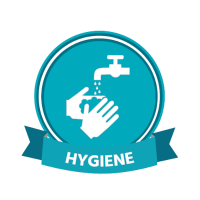
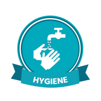
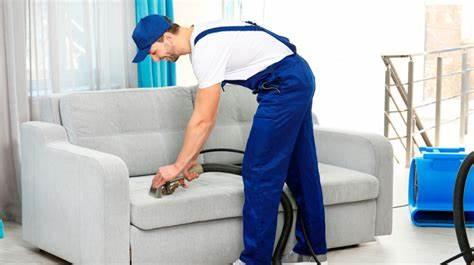
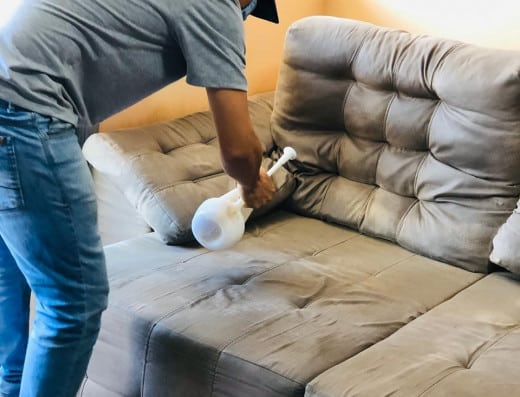
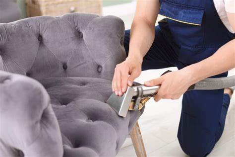

Nossos serviços
Limpeza e Higienização de Sofás
A Limpeza e Higienização de estofados é fundamental para evitar a proliferação de ácaros, fungos, germes e bactérias no interior do móvel.
Esses microrganismos nocivos à saúde surgem devido a poeira, resíduos corporais e a sujidade que se acumula no nosso dia a dia e que não conseguimos remover com uma simples limpeza caseira.
O ideal é que esse processo seja feito por profissionais capacitados para o serviço, com equipamentos e produtos de alta eficácia na remoção da sujeira impregnada e eliminação dos agentes infecciosos do interior do estofado.
Limpeza e Higienização de Colchões
Também é importante mantermos em dia a limpeza e higienização da nossa cama e colchão, aliás, isso é extremamente importante para não corrermos riscos de desenvolver alguma doença alérgica ou até respiratória.
Digo isso, porque no colchão é onde se encontra a maior concentração de ácaros, que são os principais transmissores desses tipos de doença.
Os ácaros se alimentam dos restos celulares do nosso corpo, coisa que é comum de liberarmos enquanto estamos dormindo, como o suor e a pele morta, por exemplo. A higienização elimina os ácaros e remove o acúmulo desses resíduos.
Limpeza e Higienização de Cadeiras
Por conterem estofamento em seu interior e tecido em sua estrutura, as cadeiras de jantar também necessitam de cuidados especiais.
Como já dissemos, a limpeza e higienização é essencial para a remoção do acúmulo de sujeiras e microrganismos indesejados dos estofados, o que vai proporcionar mais durabilidade para o móvel e trazer mais conforto e bem-estar para você e toda a Família.
A higienização também remove odores desagradáveis do estofado, deixando o móvel limpo, higienizado e perfumado, como se fosse novo.
Limpeza e Higienização de Tapetes
Assim como os estofados, os tapetes e carpetes também acumulam muita sujeira, e no seu caso eu diria que ainda mais, já que são itens que ficam no chão do ambiente e acabam recebendo muito mais sujidades que outros móveis.
A lavagem do tapete remove todo o acúmulo de poeiras, encardidos e odores ruins que possam vir a surgir por conta da umidade ou acidentes como, líquidos derramados, alimentos ou outros resíduos.
Higienizar o tapete também é fundamental para o conforto e o bem-estar no ambiente, proporcionando mais qualidade de vida para todos que o utilizam.
Impermeabilização de Estofados
Também é importante mantermos em dia a limpeza e higienização da nossa cama e colchão, aliás, isso é extremamente importante para não corrermos riscos de desenvolver alguma doença alérgica ou até respiratória.
Digo isso, porque no colchão é onde se encontra a maior concentração de ácaros, que são os principais transmissores desses tipos de doença.
Os ácaros se alimentam dos restos celulares do nosso corpo, coisa que é comum de liberarmos enquanto estamos dormindo, como o suor e a pele morta, por exemplo. A higienização elimina os ácaros e remove o acúmulo desses resíduos.